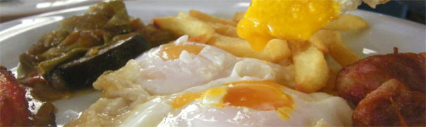

"Molino Badalejos, vacaciones en el sur de cádiz"
Un precioso molido antiguo restaurado y reconvertido en una casa rural. Situada en un magnífico valle perfectamente conectado con toda la costa de la provincia de Cádiz. Un lugar perfecto para conocer Tarifa, Las playas de los Caños de Meca, Barbate, Conil y hermosa ciudad deCádiz.
"Venta el Casarón, la cocina del campo"
Situado a 100 metros del molino, un lugar singular tanto por su estética como por su cocina.

Está ubicado en una casa construida como las tradicionales de la zona con gruesos muros de piedra y techo realizado con cañas. Cuenta con un salón interior, presidido por una chimenea y dos terrazas, una cubierta y otra en un patio rodeada de cesped además una zona de visita al huerto y a la granja
La cocina es muy singular y se aparta de la habitual en las ventas. Así hay una curiosa mezcla entre cocina internacional, cocina gallega y cocina autóctona fruto del ingenio y la sapiencia de Enrique Torres, un marino e ingeniero que decidió convertir en su profesión su afición de toda la vida, la cocina.
De que todo salga bien en los comedores se encarga su socio Pedro Cepero, un magnífico maestro de ceremonias que, además, cultiva, en la trasera de la venta verduras y gallinas que luego servirán para elaborar los singulares platos de Enrique.
Recomendamos: Empanadas al estilo gallego de sardinas o de chipirones, costillas de ternera en salsa con su fritá de papas, huevos salvajes, sopa de tomate y setas, croquetas de carne con guarnición de tomate de frito, callos con garbanzos, pollo mejicano, surtido de postres de la casa y tarta de manzana y ciruela. Venta Casarón es un restaurante basado en una mezcla de recetas Gallegas y Gaditanas donde la base fundamental de su cocina es los productos de alta calidad
Molino Badalejos
Tranquilidad y descanso en la provincia de Cádiz


Síguenos
Alojamiento y comida
Ctra. Laujar-Orgiva Km. 1.6, Laujar de Andarax
Almería - Andalucía - España
Tel: 950 513 514
Fax: 950 513 561
info@hotelalmirez.es